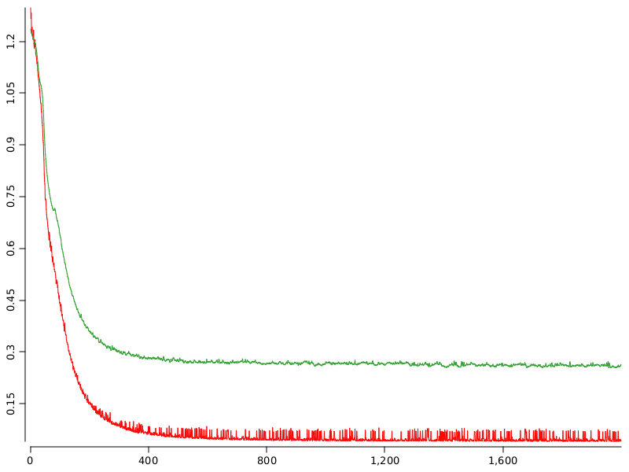

Tensors and Neural Networks#
%load ../../rapaio-bootstrap.ipynb
// %classpath /home/ati/work/rapaio/rapaio-core/target/classes/
// %classpath /home/ati/work/rapaio/rapaio-experiment/target/classes/
Adding dependency io.github.padreati:rapaio-lib:7.0.1
Solving dependencies
Resolved artifacts count: 1
Add to classpath: /home/ati/work/rapaio-jupyter-kernel/target/mima_cache/io/github/padreati/rapaio-lib/7.0.1/rapaio-lib-7.0.1.jar
TensorManager tm = TensorManager.ofFloat();
tm.seed(42);
Frame iris = Datasets.loadIrisDataset();
var x = iris.mapVars(VarRange.of("0~3")).darray().cast(DType.FLOAT);
var y = iris.rvar("class").darray().cast(DType.FLOAT);
TabularDataset irisDataset = new TabularDataset(tm, x, y);
TabularDataset[] split = irisDataset.trainTestSplit(0.3);
TabularDataset train = split[0];
TabularDataset test = split[1];
int epochs = 1_000;
double lr = 1e-3;
int batchSize = 30;
int n = 3;
Network nn = new Sequential(
tm,
new LayerNorm(tm, Shape.of(4)),
new Linear(tm, 4, n, true),
new ELU(tm),
new LayerNorm(tm, Shape.of(n)),
new Linear(tm, n, 3, true),
new ELU(tm),
new LogSoftmax(tm, 1)
);
Optimizer optimizer = Optimizer.Adam(tm, nn.parameters()).lr.set(lr);
Loss loss = new NegativeLikelihoodLoss(tm);
var trainLoss = VarDouble.empty().name("trainLoss");
var testLoss = VarDouble.empty().name("trainLoss");
var accuracy = VarDouble.empty().name("accuracy");
boolean separateBatches = true;
for (int epoch = 0; epoch < epochs; epoch++) {
double trainLossValue = 0;
if (separateBatches) {
Iterator<Batch> batchIterator = train.batchIterator(batchSize, true, false);
double batchCount = 0;
while (batchIterator.hasNext()) {
optimizer.zeroGrad();
nn.train();
Batch batch = batchIterator.next();
Tensor pred = nn.forward11(batch.tensor(0));
Loss.Output lossOut = loss.forward(pred, batch.tensor(1));
trainLossValue += lossOut.lossValue();
Autograd.backward(lossOut.tensor());
optimizer.step();
batchCount++;
}
trainLossValue /= batchCount;
} else {
optimizer.zeroGrad();
nn.train();
List<Batch> batches = nn.batchForward(batchSize, tm.var(train.darray(0)));
Loss.Output batchLoss = loss.batchForward(batches, tm.var(train.darray(1)));
trainLossValue = batchLoss.lossValue();
Autograd.backward(batchLoss.tensor());
optimizer.step();
}
nn.eval();
var lossOut = loss.forward(nn.forward11(tm.var(test.darray(0))), tm.var(test.darray(1)));
double testLossValue = lossOut.lossValue();
trainLoss.addDouble(trainLossValue);
testLoss.addDouble(testLossValue);
var y_pred = nn.forward11(test.tensor(0)).value().exp().argmax1d(1, false);
var levels = iris.rvar("class").levels();
var cm = Confusion.from(VarNominal.from(levels, test.darray(1)), VarNominal.from(levels, y_pred));
accuracy.addDouble(cm.accuracy());
if (epoch % 100 == 0) {
println("Epoch: " + epoch + ", train loss:" + trainLossValue + ", test loss:" + testLossValue);
println("\t error: " + Format.floatShort(cm.error()) + ", accuracy: " + Format.floatShort(cm.accuracy()));
cm.frequencyMatrix().printContent();
}
}
Epoch: 0, train loss:0.045644566183909774, test loss:0.2721867561340332
error: 0.111, accuracy: 0.889
[[ 8 0 0 ]
[ 0 12 3 ]
[ 0 2 20 ]]
Epoch: 100, train loss:0.04438650805968791, test loss:0.26524585485458374
error: 0.133, accuracy: 0.867
[[ 8 0 0 ]
[ 0 12 3 ]
[ 0 3 19 ]]
Epoch: 200, train loss:0.04734240286052227, test loss:0.2632858157157898
error: 0.133, accuracy: 0.867
[[ 8 0 0 ]
[ 0 12 3 ]
[ 0 3 19 ]]
Epoch: 300, train loss:0.07778783235698938, test loss:0.2686111629009247
error: 0.111, accuracy: 0.889
[[ 8 0 0 ]
[ 0 12 3 ]
[ 0 2 20 ]]
Epoch: 400, train loss:0.04781428584828973, test loss:0.25889909267425537
error: 0.111, accuracy: 0.889
[[ 8 0 0 ]
[ 0 13 2 ]
[ 0 3 19 ]]
Epoch: 500, train loss:0.042913374840281904, test loss:0.26636627316474915
error: 0.111, accuracy: 0.889
[[ 8 0 0 ]
[ 0 12 3 ]
[ 0 2 20 ]]
Epoch: 600, train loss:0.04451033310033381, test loss:0.2606799006462097
error: 0.111, accuracy: 0.889
[[ 8 0 0 ]
[ 0 13 2 ]
[ 0 3 19 ]]
Epoch: 700, train loss:0.045322495279833674, test loss:0.26323607563972473
error: 0.111, accuracy: 0.889
[[ 8 0 0 ]
[ 0 12 3 ]
[ 0 2 20 ]]
Epoch: 800, train loss:0.0429951052647084, test loss:0.263791024684906
error: 0.111, accuracy: 0.889
[[ 8 0 0 ]
[ 0 13 2 ]
[ 0 3 19 ]]
Epoch: 900, train loss:0.04508921317756176, test loss:0.26079532504081726
error: 0.111, accuracy: 0.889
[[ 8 0 0 ]
[ 0 13 2 ]
[ 0 3 19 ]]
display(WS.image(lines(trainLoss, color(Color.RED), lwd(1)).lines(testLoss, color(2), lwd(1))));

0ef11d52-6b07-4f8f-8c78-d4a97837e4ef